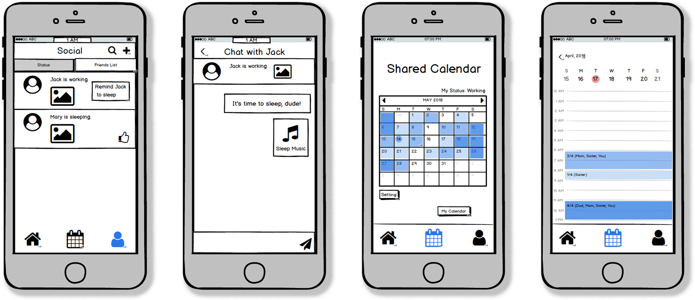
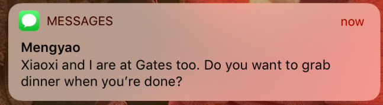
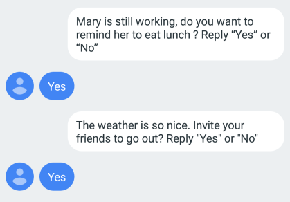
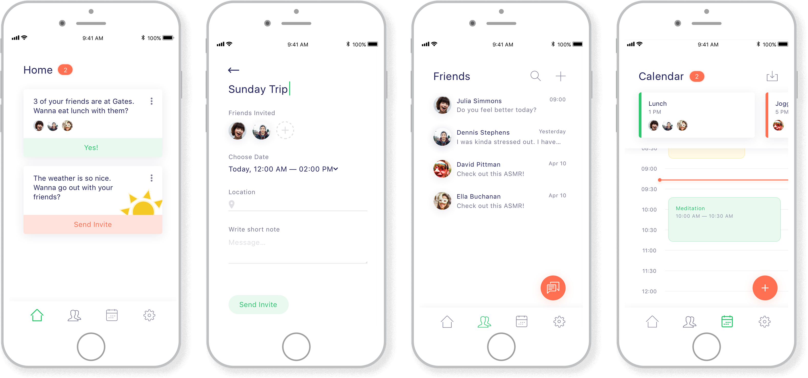
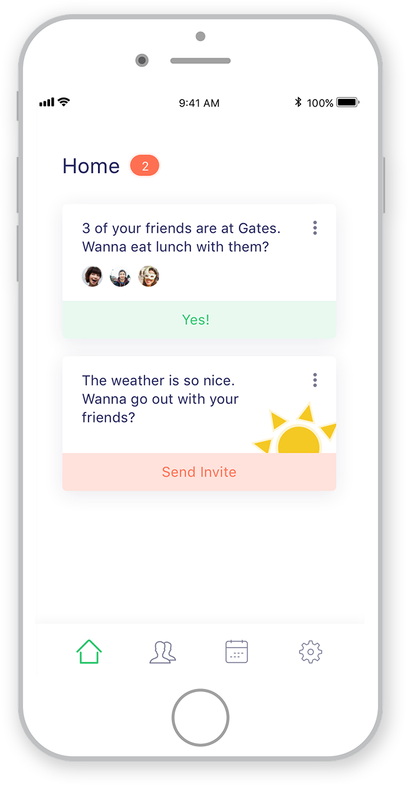
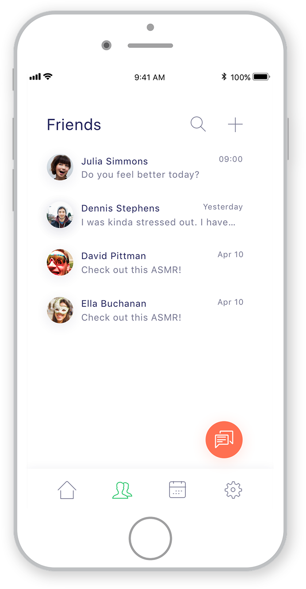
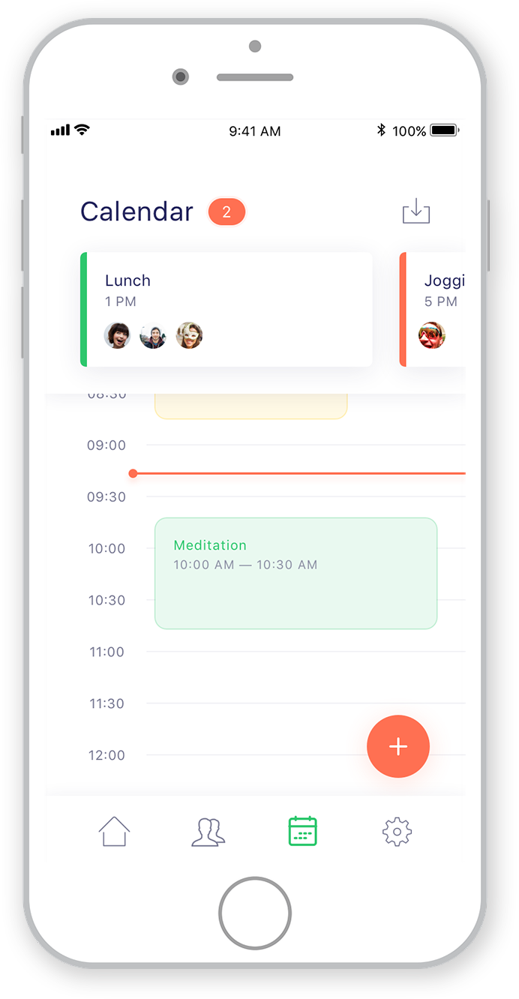
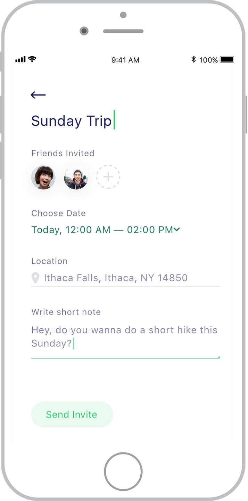

Mental Well-Being
How might we help those struggling with high levels of stress maintain mental well-being? Through a series of design research methods, our team identified social relationships as a key element in maintaining mental well-being. We designed a mobile app to focus on social interactions that evoke positive attitudes. The positive attitudes generated from these interactions are meant to help individuals feel more empowered as they proceed with stressful activities in their daily lives.
Role
UX Researcher & Designer
Deliverables
Low-fidelity Prototype
High-fidelity Prototype
Literature Review
Research Findings
User Testing
CHI Formatted Paper
Tools
Photoshop
Sketch
Invision
Balsamiq
Design Research Methods
User Interviews
1:1 interviews were conducted with 6 young adults who have recently experienced high levels of stress.
“Mental well-being is achieved through a positive attitude”
“Mental well-being is not a constant place of peacefulness and harmony, nothing will be fully tranquil in your life. Mental well-being is about having the ability to cope in stressful situations.”
Maintaining an appropriate balance of work, social relationships and sleep is key to maintaining mental well-being.
Co-design
A co-design session was facilitated to help create a product that fits seamlessly into our users’ everyday lives. We worked collaboratively with a group of participants who we considered “experts”. Our experts were comprised of individuals who are actively trying to achieve mental well-being on a daily basis.

Product sketches from co-design session
Co-design produced a mobile app that combines three major aspects of users’ daily lives: sleep, work and social
Rapid Prototyping & User Testing
A low fidelity prototype of our co-design product was developed for user testing and interviews.
Low-fid balsamiq prototype
Our social features resonated most positively with our participants.
Modified User Enactments
“Modified User Enactments” were inspired by Odom et al’s paper “A Fieldwork of the Future with User Enactments”. This was employed to further understand our users’ emotional reactions to receiving positive messages from close friends, and users' willingness to send similar messages. We recruited participants expressing high stress levels due to quickly approaching finals for MUE lab sessions. Mobile devices were provided and acted as low fidelity props. Our team orchestrated a series of messages to these devices and observed participants’ reactions to each message.

The MUE lab set up
 Participants expressed positive emotions when reading text messages from close friends while studying.
Recommended social activities provided something for our participants to look forward to, which evoked positive emotions.
Literature Review
There is further support for harnessing social relationships to foster mental well-being. “Relatedness”, which is important to well-being, can be generated through shared activities that reinforce relationships by creating shared experiences. A study of college dormitories showed a statistically significant positive correlation between interaction with others and feelings of purpose in life. Individuals who provide support to friends and see that their efforts were successful and appreciated experience increased positive emotions and meaning in life
Shared activities reinforce relationships, which are important for mental wellness.
Design Solution
See the CHI formatted paperSee the Invision prototype
The Mobile App
The final design solution is a mobile app that fosters social relationships. This app utilizes an integrated analysis of users’ data to curate appropriate notifications, such as encouraging messages and suggestions for group activities.
Mobile app screens
Home
Displays notifications of friends' statuses and suggests group activities. Provides a simple way to schedule fun activities with friends.
Friends
Provides a platform to message friends in response to their whereabouts recorded in the app. For exaample, a user can send encouraging messages to friends when they are shown being in the office late.
Calendar
Synced calendar to easily schedule activities with friends.
Invites
Invites are pre-filled available times, friends within close proximity and activity details. Users have the option to customize as they see fit.
Discussion
Our research started with user interviews to better understand young adults’
relationships with mental well-being. The initial findings were that mental well-being is accomplished
through a balance of work, social relationships and sleep. This was followed by a co-design method
where we collaboratively designed a solution with a team of experts. Based on our co-design sessions,
a low fidelity prototype was produced and user tested. Revelations from user tests led us to shift our
focus on using social relationships to promote mental well-being. We proceeded with modified user
enactments to further understand emotional reactions to sending and receiving positive messages.
Existing literature also strongly supports the notion that social interactions are highly beneficial
for mental well-being.
We see potential in our design -- our participants have expressed feeling strong positive
emotions when receiving encouraging messages from their close friends in stressful moments.
There are however limitations in our research. Some participants expressed discomfort while
receiving notifications to send certain messages to others. This can impact participation
within our app. Further research is necessary to better understand how these notifications
can be better presented.
A few participants also stated that they tend to turn off their phones or notifications in
real life situations where their full attention is required. This was not accounted for in
our MUEs.
There were also some gaps in our co-design method. While we followed the co-design methods
discussed by Sanders et al. to the best of our abilities, our participants defaulted to the
creation of a mobile app because this is what they are used to. In retrospect, our team
could have provided more encouragement to explore a wider array of options.
This would have further validated a mobile app as being the best solution to our problem.
While our final design is grounded in research, additional research is necessary to measure
the effectiveness of our final design. This can be accomplished through an additional
round of user tests and interviews.
Conclusion
Social relationships have major contributions to mental well-being. Small interactions between close friends yield noticeable boosts in positive emotions. Positivity can help individuals when facing stress in their daily lives.